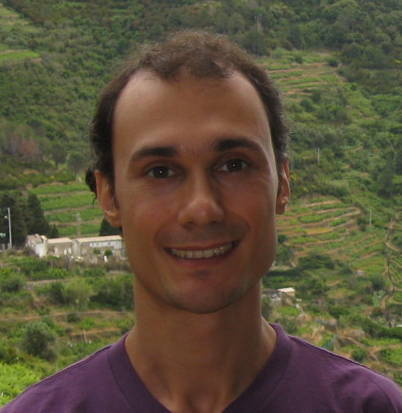

|  | Marc'Aurelio Ranzato Facebook AI Research Email: ranzato [AT] cs [DOT] toronto [DOT] edu |
I am interested in Machine Learning, Computer Vision and, more generally, Artificial Intelligence. I have worked on Unsupervised Learning algorithms using both probabilistic graphical models and energy-based models. I also used these algorithms to build hierarchical models, called deep networks. I applied these models to a variety of applications, such as visual object recognition, speech recognition, text document retrieval.
This is my current official website.
PUBLICATIONS | RESEARCH | RESUME